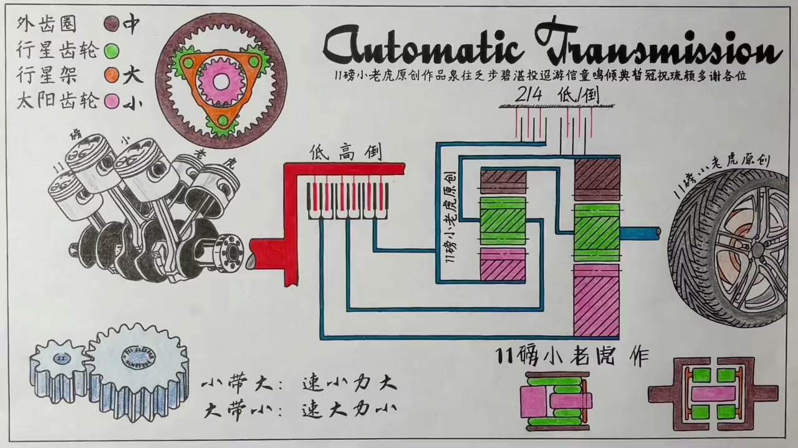
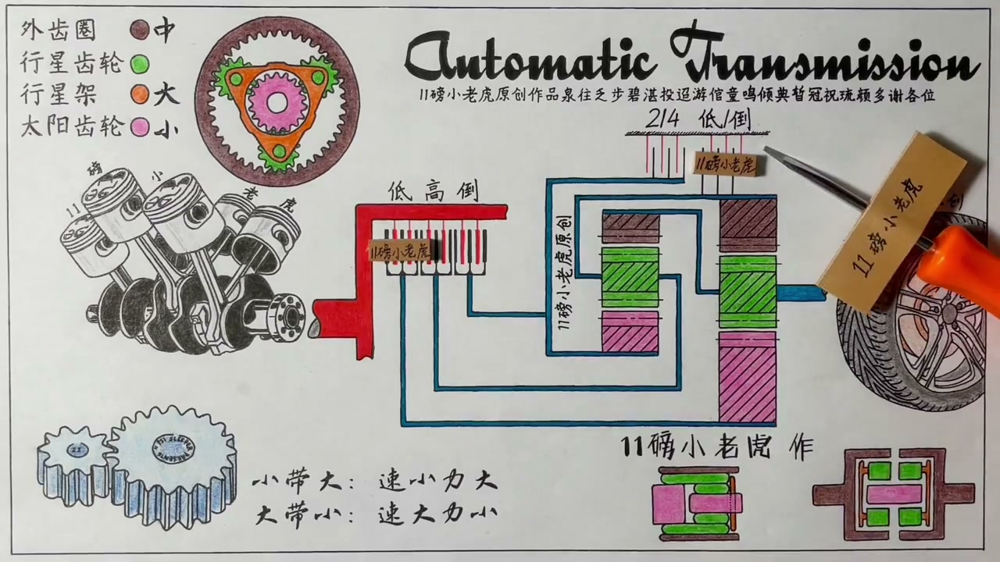
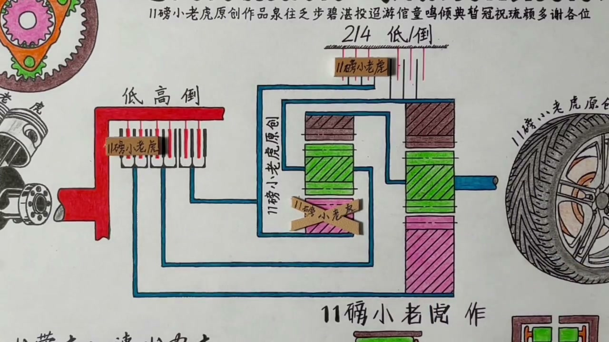
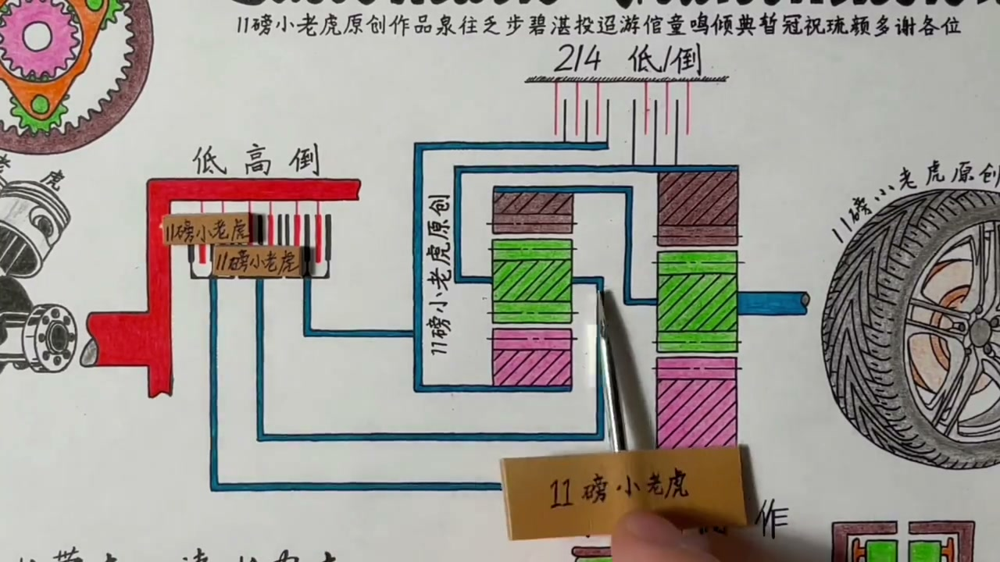
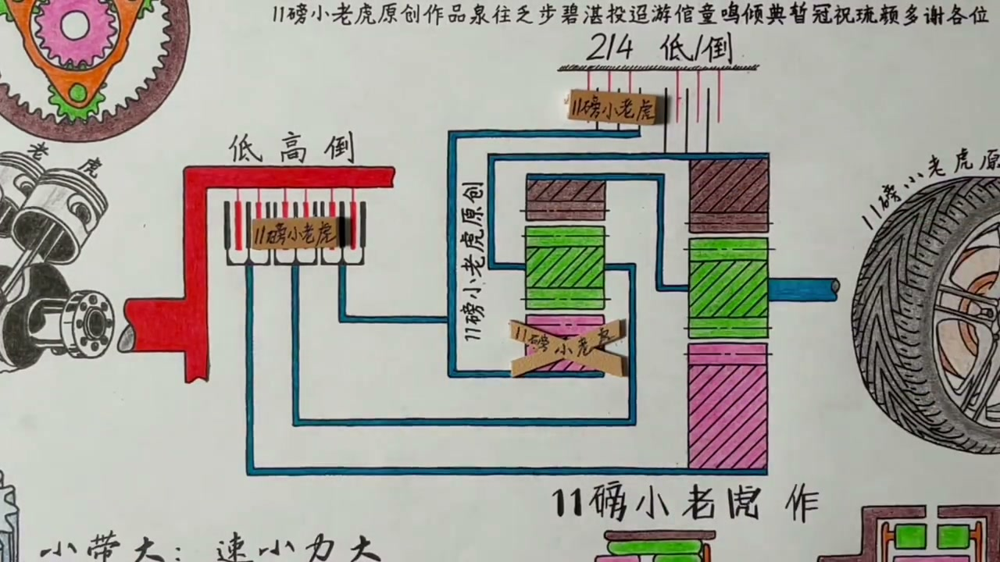
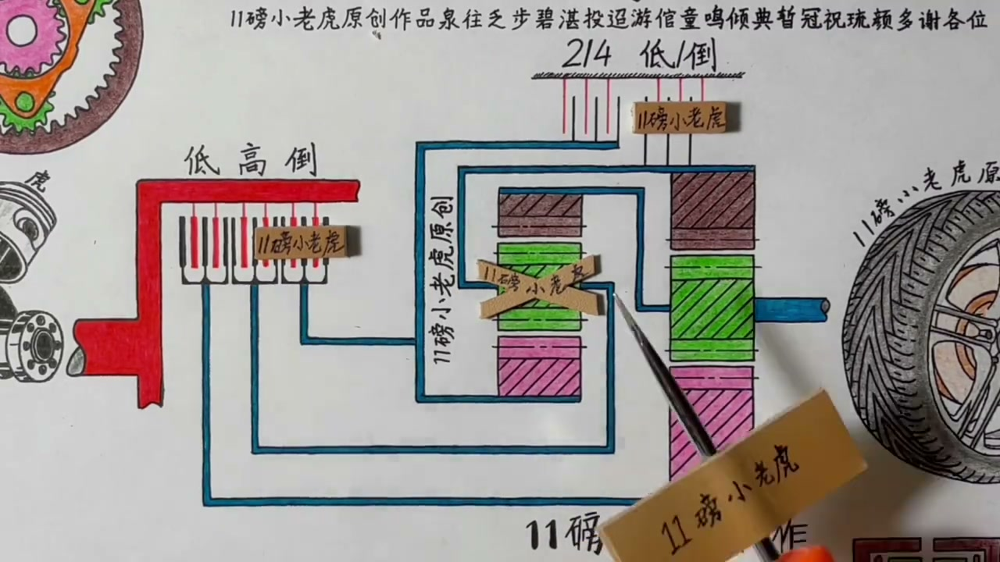

01
中文
输入轴永远在转动，输出端最终连接到车轮。
EN
The input shaft always spins, and the output eventually reaches the wheels.
表达提示input shaft（输入轴）

Scene English · 汽车 · AT变速箱
How Does an AT Automatic Transmission Work? (Part 2)
🎧 语音讲解
The Overall Layout
情境这台4E T1四速自动变速箱由前后两组行星齿轮组和五组离合片构成，用离合来切换传动路径。
输入轴永远在转动，输出端最终连接到车轮。
The input shaft always spins, and the output eventually reaches the wheels.
表达提示input shaft（输入轴）
这台四速自动变速箱的主要结构是前后两组行星齿轮组，加上五组离合片。
This 4-speed AT consists of two planetary gear sets and five clutches.
表达提示planetary gear set（行星齿轮组）
连接输入端的离合决定哪个齿轮输入，锁止离合把部件固定住。
Input clutches pick which gear is driven; lock-up clutches hold parts still.
表达提示lock-up clutch（锁止离合）
input shaft（输入轴
planetary gear set（行星齿轮组

First Gear: Smallest Drives Largest
情境一档时后太阳轮变输入端，后外齿圈被锁住，后行星架输出——最小带最大，速度最小、发力最大。
一档时，低档位离合和低倒档离合咬合，后太阳轮变成输入端。
In first gear, the low clutch engages and the rear sun gear becomes the input.
表达提示low clutch（低档位离合）
外齿圈被锁住不能动，剩下的行星架就变成了输出。
With the ring locked, the planet carrier becomes the output.
表达提示the output（输出端）
尺寸最小的太阳轮驱动尺寸最大的行星架，最小带最大。
The smallest sun gear drives the largest carrier—smallest driving biggest.
表达提示smallest drives biggest（最小带最大）
结果就是速度最小、发力最大，这就是一档的特点。
The result is the lowest speed and the highest force—that's first gear.
表达提示lowest speed（最低速度）
low clutch（低档位离合
the output（输出端

Second and Third Gear
情境二档外齿圈加入驱动，行星架转速更快；三档两组离合同时咬合，整个齿轮组1比1直传。
二档时锁住前太阳轮，外齿圈加入进来帮着太阳轮一起驱动行星架。
In second, the front sun locks and the ring joins the sun to drive the carrier.
表达提示join in（加入驱动）
后行星架转速更快一点，速度起来了，出力自然变小。
The carrier spins faster—speed rises, force falls.
表达提示speed rises（速度提升）
三档时两组离合同时咬合，行星齿轮被夹在中间无法自转。
In third, both clutches engage and the planets can't spin on their own.
表达提示can't self-spin（无法自转）
整个齿轮组像一个整体在旋转，就是1比1的传动比。
The whole set rotates as one—a 1:1 ratio.
表达提示1:1 ratio（1比1传动比）
join in（加入驱动
speed rises（速度提升

Fourth Gear and Reverse
情境四档锁住前太阳轮，前行星架驱动前外齿圈，大带小速度放大；倒挡锁住前行星架，太阳轮驱动外齿圈反向输出。
四档锁住前太阳轮，输入驱动前行星架，前外齿圈就是输出。
In fourth, the front sun locks; the carrier drives and the ring outputs.
表达提示front sun locks（锁住前太阳轮）
大的驱动中的，速度放大、出力变小，是典型的高档位特征。
Big drives medium—speed up, force down: classic high-gear behavior.
表达提示high-gear behavior（高档位特征）
倒挡锁住前行星架，输入驱动前太阳齿轮。
In reverse, the front carrier locks and the sun gear is driven.
表达提示reverse（倒挡）
行星架不动、太阳轮顺时针转，外齿圈就逆时针转，输入输出方向相反。
With the carrier still, a clockwise sun spins the ring backward—input and output oppose.
表达提示opposing directions（方向相反）
front sun locks（锁住前太阳轮
high-gear behavior（高档位特征

Neutral and Park
情境空挡和P挡都让一挡的离合处于待命咬合状态，区别只在P挡多了防止溜车的锁止机构。
空挡和P挡其实一样，都只需要一组离合处于待命状态。
Neutral and Park are similar—one clutch set stands ready.
表达提示stand ready（待命）
在P挡或空挡时，下一步要么一挡起步，要么倒挡倒车。
From Park or Neutral, the next move is either first gear or reverse.
表达提示next move（下一步）
P挡和空挡唯一的区别，是P挡后方多了一个防溜车的锁止机构。
The only difference: Park adds a parking pawl that stops the car rolling.
表达提示parking pawl（驻车锁止机构）
stand ready（待命
next move（下一步

The Essence of Complex Transmissions
情境8速9速10速变速箱只是用了更多、更复杂的行星齿轮组组合，原理的根依然是同一套。
更复杂的8速9速10速变速箱，无非是用了更多的行星齿轮组。
8-, 9-, and 10-speed units simply use more planetary gear sets.
表达提示more gear sets（更多齿轮组）
辛普森齿轮组是两组行星齿轮共用一个行星架。
A Simpson gearset pairs two planetary sets sharing one carrier.
表达提示Simpson gearset（辛普森齿轮组）
拉维尼奥齿轮组是两组行星齿轮共用一个太阳齿轮。
A Ravigneaux gearset merges two sets into one, sharing the sun gear.
表达提示Ravigneaux gearset（拉维尼奥齿轮组）
不管多复杂，原理的根依然还是行星齿轮组本身。
No matter the complexity, the root principle stays the same.
表达提示root principle（根本原理）
more gear sets（更多齿轮组
Simpson gearset（辛普森齿轮组
说整体结构
说一档
说三档
说倒挡
说空挡P挡
离合切换传动路径。
每个档位路径不同。
锁止离合固定部件。
更多档位更多齿轮组。
P挡有驻车锁止。